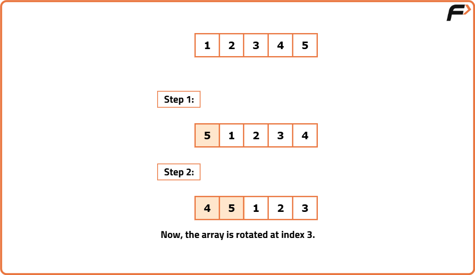
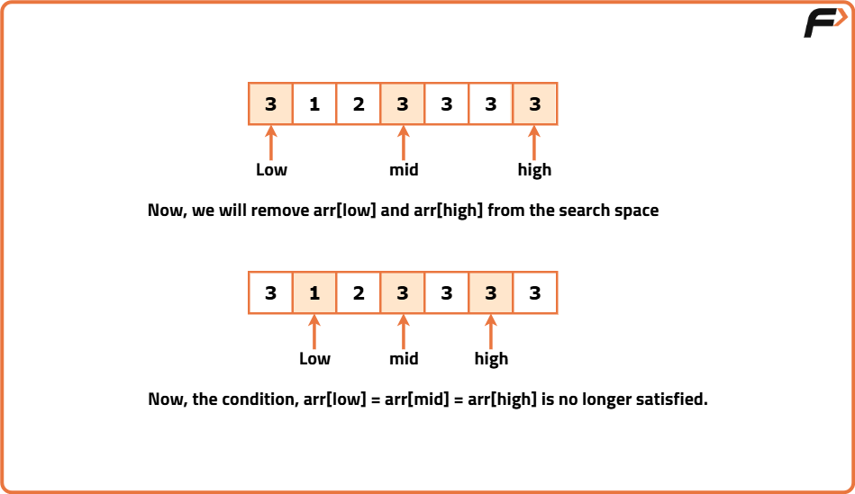

Search Element in Rotated Sorted Array II
Problem Statement: Given an integer array arr of size N, sorted in ascending order (may contain duplicate values) and a target value k. Now the array is rotated at some pivot point unknown to you. Return True if k is present and otherwise, return False.
Examples
Example 1:
Input Format: arr = [7, 8, 1, 2, 3, 3, 3, 4, 5, 6], k = 3
Result: True
Explanation: The element 3 is present in the array. So, the answer is True.
Example 2:
Input Format: arr = [7, 8, 1, 2, 3, 3, 3, 4, 5, 6], k = 10
Result: False
Explanation: The element 10 is not present in the array. So, the answer is False.
Disclaimer: Here is the practice link to help you assess your knowledge better. It's highly recommend trying to solve it before looking at the solution.
Brute Force
Algorithm
- We will traverse the array and check every element if it is equal to k. If we find any element, we will return True.
- Otherwise, we will return False.

Code
#include <bits/stdc++.h>
using namespace std;
// Class to encapsulate search logic
class Solution {
public:
// Linear search in rotated sorted array (with duplicates)
bool searchInARotatedSortedArrayII(vector<int>& arr, int k) {
int n = arr.size(); // size of the array
for (int i = 0; i < n; i++) {
if (arr[i] == k) return true; // if found, return true
}
return false; // not found
}
};
int main() {
vector<int> arr = {7, 8, 1, 2, 3, 3, 3, 4, 5, 6};
int k = 3;
// Create object of Solution class
Solution obj;
bool ans = obj.searchInARotatedSortedArrayII(arr, k);
// Print result
if (!ans)
cout << "Target is not present.\n";
else
cout << "Target is present in the array.\n";
return 0;
}
Complexity Analysis
Time Complexity: O(N), N = size of the given array.
Space Complexity: O(1), no extra space used.
Optimised Approach
Algorithm
Intuition
- First, we identify the sorted half of the array.
- Once found, we determine if the target is located within this sorted half
- If not, we eliminate that half from further consideration.
- Conversely, if the target does exist in the sorted half, we eliminate the other half. We basically compare arr[mid] with arr[low] and arr[high] in the following way:
- If arr[low] <= arr[mid]: In this case, we identified that the left half is sorted.
- If arr[mid] <= arr[high]: In this case, we identified that the right half is sorted.

Approach
- Place the 2 pointers i.e. low and high: Initially, we will place the pointers like this: low will point to the first index, and high will point to the last index.
- Calculate the ‘mid’: Now, inside a loop, we will calculate the value of ‘mid’ using the following formula: mid = (low+high) // 2 ( ‘//’ refers to integer division)
- Check if arr[mid] = target: If it is, return True.
- Check if arr[low] = arr[mid] = arr[high]: If this condition is satisfied, we will just increment the low pointer and decrement the high pointer by one step. We will not perform the later steps until this condition is no longer satisfied. So, we will continue to the next iteration from this step.
- Identify the sorted half, check where the target is located, and then eliminate one half accordingly:
- If arr[low] <= arr[mid]: This condition ensures that the left part is sorted.
- If arr[low] <= target && target <= arr[mid]: It signifies that the target is in this sorted half. So, we will eliminate the right half (high = mid-1).
- Otherwise, the target does not exist in the sorted half. So, we will eliminate this left half by doing low = mid+1.
- Otherwise, if the right half is sorted:
- If arr[mid] <= target && target <= arr[high]: It signifies that the target is in this sorted right half. So, we will eliminate the left half (low = mid+1).
- Otherwise, the target does not exist in this sorted half. So, we will eliminate this right half by doing high = mid-1.
- Once, the ‘mid’ points to the target, we will return True.
- This process will be inside a loop and the loop will continue until low crosses high. If no element is found, we will return False.
Code
#include <bits/stdc++.h>
using namespace std;
bool searchInARotatedSortedArrayII(vector<int>& arr, int k) {
int n = arr.size();
int low = 0, high = n - 1;
while (low <= high) {
int mid = (low + high) / 2;
// If mid points to the target
if (arr[mid] == k) return true;
// Edge case: all three are equal, we cannot determine which side is sorted
if (arr[low] == arr[mid] && arr[mid] == arr[high]) {
low++;
high--;
continue;
}
// If the left half is sorted
if (arr[low] <= arr[mid]) {
if (arr[low] <= k && k <= arr[mid]) {
high = mid - 1; // Target lies in left
} else {
low = mid + 1; // Target lies in right
}
} else {
// Right half is sorted
if (arr[mid] <= k && k <= arr[high]) {
low = mid + 1; // Target lies in right
} else {
high = mid - 1; // Target lies in left
}
}
}
return false;
}
int main() {
vector<int> arr = {7, 8, 1, 2, 3, 3, 3, 4, 5, 6};
int k = 3;
bool ans = searchInARotatedSortedArrayII(arr, k);
if (ans)
cout << "Target is present in the array.\n";
else
cout << "Target is not present.\n";
return 0;
}
Complexity Analysis
Time Complexity: O(logN) for the best and average case. O(N/2) for the worst case. Here, N = size of the given array.
Space Complexity: O(1), no extra space used